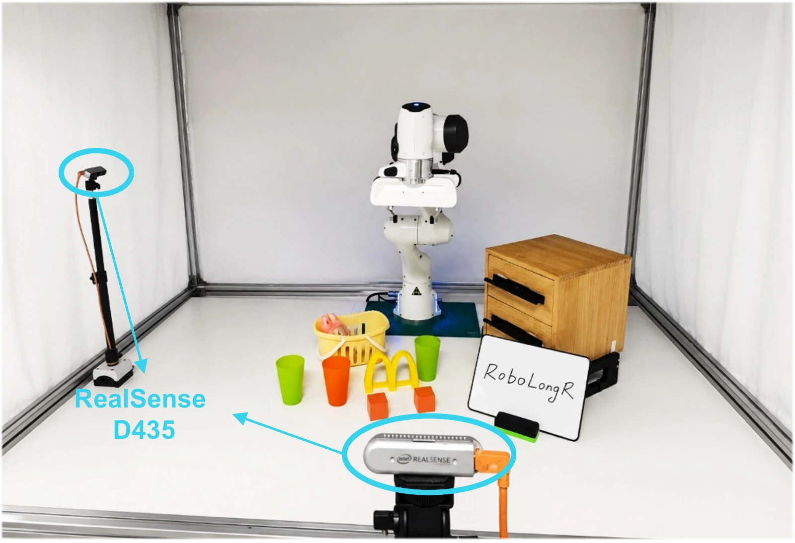

LONG-HORIZON ROBOT LEARNING
RoboLongR: Causally-Consistent Rewards Teach Robots to Progressively Master Long-Horizon Manipulation
Abstract
Long-horizon manipulation requires distinguishing task completion from visually similar states reached without satisfying essential prerequisites. RoboLongR is an offline-to-online framework that targets causally consistent rewards: assessing progress against task prerequisites using execution history.
Stage-shuffle supervision and recurrent memory encourage execution-order sensitivity. The learned reward guides stage-conditioned policy refinement from behavior cloning to reinforcement learning, while sparse terminal feedback triggers reward correction for repeated high-reward failures.
We evaluate this objective using synthetic order-perturbation controls and representative real executions, and assess downstream utility through complete-task success and component ablations.
Closing an empty drawer can resemble success. Reward learning should account for whether the object was placed inside. Schematic curves illustrate the intended behavior.
02 / THE METHOD
From demonstrations to better decisions.
Order supervision shapes the reward.
Interaction tests and refines it.
- 01
Supervise execution order
Reorder intact demonstration segments to create synthetic negatives. Order-preserving splices discourage indiscriminate cut detection.
- 02
Remember prior observations
A recurrent reward model carries information across temporal windows. A second training round adapts segmentation to predicted progress.
- 03
Refine the policy
Initialize with stage-conditioned behavior cloning, then optimize the learned reward through scheduled online reinforcement learning.
- 04
Correct recurring failures
Sparse terminal feedback triggers reward updates when unsuccessful executions repeatedly receive high predicted progress.
Rewarded progress should be compatible with task prerequisites supported by execution history. Stage-order supervision is a training proxy for this objective. It does not recover a causal graph or certify semantic prerequisite satisfaction.
03 / EXPERIMENTS
Evaluate the reward. Measure the whole task.
Controlled reward diagnostics and
downstream policy evaluation.
Higher complete-task success.
RoboLongR achieves 31.8% average success on long-horizon tasks excluded from reward pretraining, compared with 22.6% for ReWiND.
The reported gain is larger on strong-dependency tasks: 14.2 percentage points, versus 4.2 on weak-dependency tasks.
50 evaluation trials per task per seed. Target-task demonstrations initialize the policy, and target-task interaction supports online learning. This is not zero-shot policy evaluation. Differences are computed before rounding.
Sensitive to reordered execution.
RoboLongR separates demonstrations from synthetic order perturbations, with a larger reward margin and higher pairwise ranking accuracy.
The small margin on order-preserving splices argues against penalizing every splice. Unmatched boundary statistics remain a possible shortcut. These controls establish discrimination of the tested perturbations, not complete semantic prerequisite verification.
| Metric | ReWiND | RoboLongR |
|---|---|---|
| Order-perturbation margin ↑ | 0.04 | 0.51 |
| Ranking accuracy ↑ | 54.2% | 91.7% |
| Rewound margin ↑ | 0.38 | 0.42 |
| Splice margin ↓ | 0.03 | 0.06 |
| Progress MSE ↓ | 0.021 | 0.023 |
Margin: mean reward on a correct trajectory minus mean reward on its perturbed counterpart.
Order supervision matters.
Removing stage-shuffle produces the largest observed drop in task success among the tested component ablations.
These comparisons assess each removal within the complete training pipeline. They do not imply independent, additive contributions.
| Configuration | Success | Change |
|---|---|---|
| RoboLongR | 31.8% | — |
| Without stage-shuffle | 24.3% | −7.5 pp |
| Without online correction | 28.4% | −3.4 pp |
| Without recurrent memory | 28.9% | −2.9 pp |
| Without stage schedule | 29.8% | −2.0 pp |
04 / ON THE REAL ROBOT
Four tasks. One complete-execution goal.
Tool use, assembly, multi-object manipulation,
and articulated-object interaction.

Franka Panda
7 degrees of freedom
Two Intel RealSense D435 cameras
10 GELLO demonstrations per task
| Task | ReWiND | RoboLongR |
|---|---|---|
| Tabletop Tidying | 2 / 10 | 5 / 10 |
| Drawer Object Storage | 2 / 10 | 7 / 10 |
| Arch Bridge Construction | 1 / 10 | 4 / 10 |
| Board Wiping | 5 / 10 | 7 / 10 |
| Pooled success | 25.0% | 57.5% |
Pooled Wilson 95% intervals: 14.2–40.2% for ReWiND and 42.2–71.4% for RoboLongR. These trials evaluate a fixed four-task mixture; per-task statistical significance is not established.
Explore rewards on real executions
05 / PAPER & RESOURCES
Explore the task split.
88 pretraining tasks. 18 evaluation tasks.
A transparent separation of training and evaluation.
REWARD PRETRAINING
88 pretraining tasks
Successful demonstrations provide the foundation for reward learning.
88 of 88 tasks
| No. | Task | Description |
|---|---|---|
| 01 | Basketball In Hoop | Shoot the ball through the net |
| 02 | Beat the Buzz | Slide the ring along the pole without contact |
| 03 | Change Channel | Point the remote and change the channel |
| 04 | Change Clock | Adjust the needles to the target time |
| 05 | Close Box | Close the lid on the box |
| 06 | Close Door | Grip the handle and pull the door shut |
| 07 | Close Drawer | Slide the specified drawer shut |
| 08 | Close Fridge | Shut the fridge door |
| 09 | Close Grill | Lower the grill cover by its handle |
| 10 | Close Jar | Screw the lid onto the specified jar |
| 11 | Close Laptop Lid | Shut the laptop lid |
| 12 | Close Microwave | Close the microwave door |
| 13 | Get Ice From Fridge | Fill the cup with ice from the fridge |
| 14 | Hang Frame On Hanger | Hang the picture frame on the hanger |
| 15 | Hit Ball With Queue | Pot the ball into the goal with the cue |
| 16 | Hockey | Push the ball into the goal with the stick |
| 17 | Insert Onto Square Peg | Slide the ring onto the specified spoke |
| 18 | Insert Usb In Computer | Slide the USB stick into the slot |
| 19 | Lamp Off | Press the switch to turn the lamp off |
| 20 | Lamp On | Press the switch to turn the lamp on |
| 21 | Lift Numbered Block | Lift the block with the target number |
| 22 | Light Bulb In | Screw the bulb from its holder into the lamp |
| 23 | Light Bulb Out | Unscrew the bulb and leave it in the stand |
| 24 | Meat Off Grill | Take the specified meat off the grill |
| 25 | Meat On Grill | Put the specified meat on the grill |
| 26 | Move Hanger | Move the hanger to the other rack |
| 27 | Open Box | Open the box lid |
| 28 | Open Door | Grip the handle and push the door open |
| 29 | Open Drawer | Pull the specified drawer open |
| 30 | Open Fridge | Slide the fridge door open |
| 31 | Open Grill | Raise the grill cover by its handle |
| 32 | Open Jar | Unscrew the lid off the specified jar |
| 33 | Open Microwave | Pull the microwave door open |
| 34 | Open Oven | Pull the oven door open by its handle |
| 35 | Open Washing Machine | Pull the washing machine door open |
| 36 | Open Window | Unlock the handle and push the window open |
| 37 | Open Wine Bottle | Unscrew and remove the bottle cap |
| 38 | Phone On Base | Put the handset back on its base |
| 39 | Pick And Lift | Lift the specified block to the target |
| 40 | Pick And Lift Small | Lift the specified small object to the target |
| 41 | Pick Up Cup | Grasp and lift the specified cup |
| 42 | Place Hanger On Rack | Place the clothes hanger on the rack |
| 43 | Place Shape In Shape Sorter | Put the shape into its matching slot |
| 44 | Play Jenga | Remove the protruding block without toppling |
| 45 | Plug Charger In Power Supply | Plug the charger into the mains |
| 46 | Pour From Cup To Cup | Pour one cup's contents into the other |
| 47 | Press Switch | Flick the switch |
| 48 | Push Button | Push down the specified button |
| 49 | Push Buttons | Push the buttons in the specified order |
| 50 | Put Bottle In Fridge | Open the fridge and put the bottle in |
| 51 | Put Groceries In Cupboard | Put the specified item in the cupboard |
| 52 | Put Knife In Knife Block | Slide the knife into its slot in the block |
| 53 | Put Knife On Chopping Board | Move the knife from block to chopping board |
| 54 | Put Money In Safe | Put the money on the specified safe shelf |
| 55 | Put Plate In Colored Dish Rack | Leave the plate between the specified spokes |
| 56 | Put Rubbish In Bin | Drop the rubbish into the bin |
| 57 | Put Toilet Roll On Stand | Slide the toilet roll onto its stand |
| 58 | Put Tray In Oven | Open the oven and slide the tray in |
| 59 | Put Umbrella In Umbrella Stand | Place the umbrella into its stand |
| 60 | Reach And Drag | Drag the cube onto the target with the stick |
| 61 | Reach Target | Touch the specified sphere with the gripper |
| 62 | Remove Cups | Take one cup off the holder onto the table |
| 63 | Scoop With Spatula | Scoop the cube up with the spatula and lift |
| 64 | Screw Nail | Screw in the nail with the screwdriver |
| 65 | Slide Block To Target | Push the block onto the target |
| 66 | Slide Cabinet Open | Slide the specified cabinet half open |
| 67 | Stack Wine | Slide the bottle onto the wine rack |
| 68 | Straighten Rope | Pull each rope end until it is straight |
| 69 | Sweep To Dustpan | Brush the dirt into the dustpan |
| 70 | Take Cup Out From Cabinet | Open the cabinet and retrieve the cup |
| 71 | Take Frame Off Hanger | Slide the photo off the hanger onto the table |
| 72 | Take Item Out Of Drawer | Open the drawer and take the cube out |
| 73 | Take Lid Off Saucepan | Lift the lid off the saucepan by its handle |
| 74 | Take Money Out Safe | Take the money off the shelf onto the table |
| 75 | Take Off Weighing Scales | Remove the pepper from the scales |
| 76 | Take Plate Off Colored Dish Rack | Remove the plate from the specified spokes |
| 77 | Take Shoes Out Of Box | Open the box and put the shoes on the table |
| 78 | Take Toilet Roll Off Stand | Slide the roll off its stand onto the table |
| 79 | Take Tray Out Of Oven | Open the oven and take the tray out |
| 80 | Take Umbrella Out Of Umbrella Stand | Lift the umbrella out of its stand |
| 81 | Take Usb Out Of Computer | Remove the USB stick from its port |
| 82 | Toilet Seat Down | Close the toilet seat by its lid |
| 83 | Toilet Seat Up | Lift the toilet seat upright |
| 84 | Turn Oven On | Rotate the leftmost knob to turn the oven on |
| 85 | Turn Tap | Grasp and turn the specified tap handle |
| 86 | Tv On | Point the remote and turn the television on |
| 87 | Unplug Charger | Pull the charger out of its socket |
| 88 | Weighing Scales | Put the specified pepper on the scales |
No matching tasks. Try another task or object name.
20 successful demonstrations per task. Scroll within the table to explore the complete list.
DOWNSTREAM EVALUATION
18 evaluation tasks
Excluded from reward pretraining. Grouped by the prominence of physical prerequisites.
Strong dependency
Prominent physical prerequisites9 tasks| Task | Prerequisite structure | Valid alternative orders |
|---|---|---|
| Put Item In Drawer | Open drawer → Place item → Close drawer | None across the three subtasks |
| Empty Dishwasher | Open door → Pull out rack → Remove plate | None |
| Slide Cabinet Open & Place Cups | Open cabinet → Place cups | Cup order, when several cups are used |
| Water Plants | Grasp can → Approach plant → Pour | None |
| Wipe Desk | Grasp sponge → Contact desk → Remove dirt | Order among independent dirt patches |
| Block Pyramid | Bottom layer → Middle layer → Top layer | Placements within one layer |
| Stack Blocks | Lower block → Block supported by it | Orders preserving all support relations |
| Stack Cups | Support cup → Cup placed above it | Orders preserving all support relations |
| Stack Chairs | Support chair → Chair placed above it | Orders preserving all support relations |
Weak dependency
More flexible object order9 tasks| Task | Prerequisite structure | Valid alternative orders |
|---|---|---|
| Place Cups | Independent placement for each cup | Any cup order |
| Put All Groceries In Cupboard | Independent placement for each item | Any item order |
| Setup Checkers | Independent placement for each checker | Any checker order |
| Setup Chess | Independent placement for each piece | Any piece order |
| Set The Table | Independent placement for each tableware item | Any tableware order |
| Put Books On Bookshelf | Independent placement for each book | Any book order |
| Put Shoes In Box | Open lid → Place either shoe | Either shoe order |
| Solve Puzzle | Independent insertion for each puzzle piece | Any piece order |
| Empty Container | Independent transfer for each object | Any object order |
Arrows indicate prerequisite order. Both groups can admit partial orders; this grouping does not imply a single valid sequence for every task.
REAL-ROBOT EVALUATION
What counts as success?
Complete-task criteria for each of the four real-robot tasks.
| Task | Prerequisite structure | Success criterion |
|---|---|---|
| Tabletop Tidying | Stack three cups → Place the completed stack into the basket | All three cups form a stable stack and the complete stack is inside the basket |
| Drawer Object Storage | Open drawer → Place object → Close drawer | Object is inside and drawer is fully closed |
| Arch Bridge Construction | Place both supports → Place arch | Supports remain upright and arch rests on them without toppling |
| Board Wiping | Retrieve tool → Wipe marked region | Marked region is clean and tool is released |
Training and evaluation protocol
The pretraining set provides 20 successful demonstrations per RLBench task, totaling 1,760 trajectories. An additional 4,000 Open-X trajectories supply progress supervision and rewound negatives. Each of the 18 evaluation tasks provides 20 demonstrations for reward relabeling and behavior-cloning initialization. Subsequent policy learning and reward correction use target-task interaction.
The task lists reproduce the manuscript’s task names and descriptions. They are descriptive resources, not a release of trajectory data or benchmark implementation.